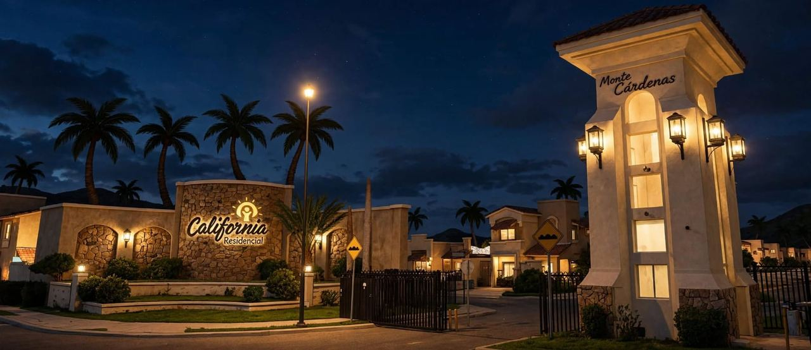

Noticias, convocatorias, informes, reuniones y todo lo que pasa en el fraccionamiento, en un solo lugar.
Queremos organizar la posada de fin de año. Si te gustaría ayudar con logística o decoración, avísanos en el grupo de WhatsApp.
Fecha límite: [FECHA]Se convoca a los vecinos a confirmar sus datos de contacto para el padrón oficial de la colonia.
Fecha límite: [FECHA]Los documentos se comparten aquí conforme el comité los publica.